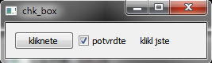
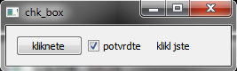

Zdorojové kódy: CheckBox.py.
CheckBox¶
CheckBox je velmi užitečný widget. Využívá se zejména pro zjištění, zdali si uživatel přečetl licenční podmínky nebo zjištění dvou a více informaci, které mohou nastat společně.
import sys
from PyQt4 import QtGui,QtCore
class Main_Window(QtGui.QWidget):
def __init__(self):
super(Main_Window,self).__init__()
self.setup_ui()
def setup_ui(self):
self.chk_box = QtGui.QCheckBox(self)
self.chk_box.setText("potvrdte")
self.lbl=QtGui.QLabel(parent=self)
btn=QtGui.QPushButton("kliknete",self)
btn.clicked.connect(self.chk_state)
btn.resize(btn.sizeHint())
První část textu zůstává jako obvykle stejná. V metodě setup_ui si jako první vytvoříme objekt chk_box pomocí konstruktoru QCheckBox(rodič). Poté nastavíme text, který se bude zobrazovat vedle widgetu pomocí metody setText(text). Pro zobrazení výzvy pro uživatele si vytvoříme jako v předchozím lbl objekt. Následně vytvoříme tlačítko s vazbou na metodu self.chk_state.
grid = QtGui.QGridLayout()
grid.addWidget(btn,0,0)
grid.addWidget(self.chk_box,0,1)
grid.addWidget(self.lbl,0,2)
self.setLayout(grid)
self.setWindowTitle("chk_box")
self.show()
Poslední část kódu je totožná, jako v předchozích příkladech.:
def chk_state(self):
if self.chk_box.isChecked():
self.lbl.setText("klikl jste")
self.lbl.resize(self.lbl.sizeHint())
else:
self.lbl.setText("potvrdte tlacitko")
self.lbl.resize(self.lbl.sizeHint())
Metoda chk_state obsahuje jednoduchou podmínku, ve které se ptáme stejně, jako v předchozím příkladu na stav widgetu. Dále podle stavu nastavíme odpovídající odpověď.
 
